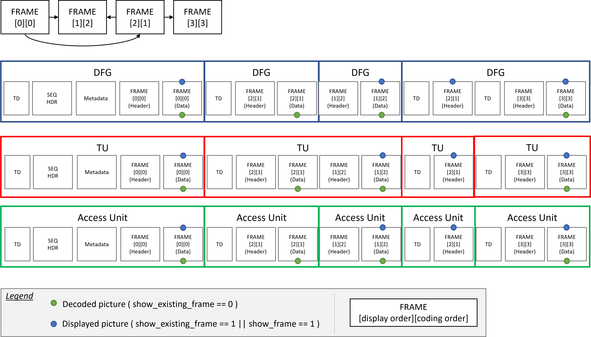

1. Introduction
This document specifies how to carry [AV1] video elementary streams in the MPEG-2 Transport Stream format [MPEG-2-TS]. It does not specify the presentation of AV1 streams in the context of a program stream.
This document defines the carriage of AV1 in a single PID (Packet Identifier), assuming buffer model info from the first operating point. It may not be optimal for layered streams or streams with multiple operating points. Future versions may incorporate this capability.
1.1. Modal verbs terminology
In the present document "shall", "shall not", "should", "should not", "may", "need not", "will", "will not", "can" and "cannot" are to be interpreted as described in clause 3.2 of the ETSI Drafting Rules (Verbal forms for the expression of provisions).Informative notes begin with the word “Note” and are set apart from the normative text with class="note", like this:
Note: this is an informative note.
1.2. Definition of mnemonics and syntax function
In the present document the mnemonics, the syntax functions, and the syntax descriptors are to be interpreted as described in [MPEG-2-TS]. Theuimsbf and bslbf mnemonics are defined in Section 2.2.6 of [MPEG-2-TS]. The nextbits() function is interpreted as in [MPEG-2-TS].
In the syntax tables of this document, the type and bit width of each field are expressed together in the form mnemonic(N), where N is the number of bits. For example, uimsbf(8) denotes an 8-bit unsigned integer, most significant bit first.
2. Identifying AV1 streams in MPEG-2 TS
2.1. AV1 registration descriptor
The presence of a Registration Descriptor, as defined in [MPEG-2-TS], is mandatory with the format_identifier field set to 'AV01' (A-V-0-1). The Registration Descriptor shall be the first descriptor in the respective elementary stream entry in the descriptor loop of the PMT (Program Map Table) and included before the AV1 video descriptor.
2.1.1. Syntax
registration_descriptor () { uimsbf ( 8 ) descriptor_tag ; uimsbf ( 8 ) descriptor_length ; uimsbf ( 32 ) format_identifier ; }
2.1.2. Semantics
descriptor_tag - This value shall be set to 0x05.
descriptor_length - This value shall be set to 4.
format_identifier - This value shall be set to 'AV01' (A-V-0-1).
2.2. AV1 video descriptor
The AV1 video descriptor provides basic information for identifying coding parameters, such as profile and level parameters of an AV1 video stream. The same data structure as AV1CodecConfigurationRecord in ISOBMFF is used to aid conversion between the two formats, EXCEPT that two of the reserved bits are used for HDR/WCG identification. The syntax and semantics for this descriptor appears in the table below and in the subsequent text.
If an AV1 video descriptor is associated with an AV1 video stream, then this descriptor shall be conveyed in the descriptor loop for the respective elementary stream entry in the program map table.
2.2.1. Syntax
AV1_video_descriptor () { uimsbf ( 8 ) descriptor_tag ; uimsbf ( 8 ) descriptor_length ; bslbf ( 1 ) marker ; uimsbf ( 7 ) version ; uimsbf ( 3 ) seq_profile ; uimsbf ( 5 ) seq_level_idx_0 ; bslbf ( 1 ) seq_tier_0 ; bslbf ( 1 ) high_bitdepth ; bslbf ( 1 ) twelve_bit ; bslbf ( 1 ) monochrome ; bslbf ( 1 ) chroma_subsampling_x ; bslbf ( 1 ) chroma_subsampling_y ; uimsbf ( 2 ) chroma_sample_position ; uimsbf ( 2 ) hdr_wcg_idc ; bslbf ( 1 ) reserved_zeros ; bslbf ( 1 ) initial_presentation_delay_present ; if ( initial_presentation_delay_present ) { uimsbf ( 4 ) initial_presentation_delay_minus_one ; } else { uimsbf ( 4 ) reserved_zeros ; } }
2.2.2. Semantics
descriptor_tag - This value shall be set to 0x80.
descriptor_length - This value shall be set to 4.
marker - This value shall be set to 1.
version - This field indicates the version of the AV1_video_descriptor. This value shall be set to 1.
seq_profile, seq_level_idx_0 and high_bitdepth - These fields shall be coded according to the semantics defined in [AV1]. If these fields are not coded in the Sequence Header OBU in the AV1 video stream, the inferred values are coded in the descriptor.
seq_tier_0, twelve_bit, monochrome, chroma_subsampling_x, chroma_subsampling_y, chroma_sample_position - These fields shall be coded according to the same semantics when they are present. If they are not present, they will be coded using the value inferred by the semantics.
hdr_wcg_idc - The value of this syntax element indicates the presence or absence of high dynamic range (HDR) and/or wide color gamut (WCG) video components in the associated PID according to the table below. HDR is defined to be video that has high dynamic range if the video stream EOTF is higher than the reference EOTF defined in [BT-1886]. WCG is defined to be video that is coded using colour primaries with a colour gamut not contained within [BT-709].
| hdr_wcg_idc | Description |
|---|---|
| 0 | SDR, i.e., video is based on the reference EOTF defined in [BT-1886] with a color gamut that is contained within [BT-709] with a [BT-709] container |
| 1 | WCG only, i.e., video color gamut in a [BT-2020] container that exceeds [BT-709] |
| 2 | Both HDR and WCG are to be indicated in the stream |
| 3 | No indication made regarding HDR/WCG or SDR characteristics of the stream |
reserved_zeros - Will be set to zeroes.
initial_presentation_delay_present - Indicates initial_presentation_delay_minus_one field is present.
initial_presentation_delay_minus_one - Ignored for [MPEG-2-TS] use, included only to aid conversion to/from ISOBMFF.
3. Constraints on AV1 streams in MPEG-2 TS
3.1. General constraints
For AV1 video streams, the following constraints apply:
-
An AV1 video stream conforming to a profile defined in Annex A of [AV1] shall be an element of an MPEG-2 program and the
stream_typefor this elementary stream shall be equal to 0x06 (MPEG-2 PES (Packetized Elementary Stream) packets containing private data). -
An AV1 video stream shall have the low overhead byte stream format as defined in [AV1].
-
The
sequence_header_obuas specified in [AV1], that are necessary for decoding an AV1 video stream shall be present within the elementary stream carrying that AV1 video stream. -
An OBU may contain the
obu_sizefield. For applications that need easy conversion to MP4, using theobu_sizefield is recommended. -
OBU trailing bits should be limited to byte alignment and should not be used for padding.
-
Tile List OBUs shall not be used
-
Temporal Delimiters may be removed
-
Redundant Frame Headers and Padding OBUs may be used.
-
Metadata OBUs may be used.
-
Mastering display colour volume metadata OBU (
metadata_hdr_mdcv): It is recommended that HDR bitstreams using PQ10 include ametadata_hdr_mdcvOBU with valid values for all fields as defined in [AV1]. If the values for all fields are unknown, it is recommended that nometadata_hdr_mdcvOBU is present. If the value for any individual field is unknown, it is recommended that the unknown field is set to 0.
NOTE: The fixed-point representations used in metadata_hdr_mdcv differ from those used in SMPTE ST 2086 and ISOBMFF: chromaticity values use 0.16 fixed-point (1/65536 resolution), luminance_min uses 18.14 fixed-point (1/16384 cd/m² resolution), and luminance_max uses 24.8 fixed-point (1/256 cd/m² resolution). Standard mastering display chromaticity and luminance values from SMPTE ST 2086 cannot be represented exactly in these fields. Implementers converting mastering metadata from SMPTE ST 2086 or ISOBMFF should use round-to-nearest when populating these fields.
-
Content light level metadata OBU (
metadata_hdr_cll): HDR bitstreams using PQ10 may contain ametadata_hdr_cllOBU as defined in [AV1]. If ametadata_hdr_cllOBU is present, it shall be transmitted with every random access point.
Note: In some cases, such as live and linear broadcast, it may not be possible to calculate the values of max_cll and max_fall fields. If the values for max_cll and max_fall are known, it is recommended that HDR bitstreams using PQ10 include valid settings. If the value for these fields is unknown, it is recommended that no metadata_hdr_cll OBU is present in the HDR bitstream; or if the value for any one of these fields is unknown, it is recommended that the unknown field is set to 0.
-
The time interval between two successive changes in seq_profile, seq_tier or seq_level_idx carried in the sequence_header_obu syntax structure shall be greater than or equal to one second.
-
The
still_pictureflag should be set to 0. -
The encoder should place RAPs in the PES at least once every 2 seconds. Where rapid channel change times are important or for applications such as PVR it may be appropriate for RAPs to occur more frequently, such as every 1 second. The time interval between successive RAPs shall be measured as the difference between their respective DTS values.
In addition, a start code insertion and emulation prevention process shall be performed on the AV1 Bitstream prior to its PES encapsulation. This process is described in § 3.2 Start-code based format.
3.2. Start-code based format
Prior to carriage into PES, the AV1 open_bitstream_unit() is encapsulated into ts_open_bitstream_unit(). This is required to provide direct access to OBU through a start-code mechanism inserted prior to each OBU. The following syntax describes how to retrieve the open_bitstream_unit() from the ts_open_bitstream_unit() (tsOBU).
ts_open_bitstream_unit ( NumBytesInTsObu ) { uimsbf ( 24 ) obu_start_code ; /* equal to 0x01 */ NumBytesInObu = 0 for ( i = 2 ; i < NumBytesInTsObu ; i ++ ) { if ( i + 2 < NumBytesInTsObu && nextbits ( 24 ) == 0x000003 ) { uimsbf ( 8 ) open_bitstream_unit [ NumBytesInObu ++ ]; uimsbf ( 8 ) open_bitstream_unit [ NumBytesInObu ++ ]; i += 2 uimsbf ( 8 ) emulation_prevention_three_byte ; /* equal to 0x03 */ } else uimsbf ( 8 ) open_bitstream_unit [ NumBytesInObu ++ ]; } }
obu_start_code - This value shall be set to 0x000001.
open_bitstream_unit[i] - i-th byte of the AV1 open bitstream unit (As defined in section 5.3 of [AV1]).
It is the responsibility of the TS muxer to prevent start code emulation by escaping all the forbidden three-byte sequences using the emulation_prevention_three_byte (always equal to 0x03). The forbidden sequences are defined below.
Within the ts_open_bitstream_unit() payload, the following three-byte sequences shall not occur at any byte-aligned position :
-
0x000000
-
0x000001
-
0x000002
Within the ts_open_bitstream_unit() payload, any four-byte sequence that starts with 0x000003 other than the following sequences shall not occur at any byte-aligned position :
-
0x00000300
-
0x00000301
-
0x00000302
-
0x00000303
3.3. The AV1 Access Unit
An AV1 Access Unit consists of all OBUs, including headers, between the end of the last OBU associated with the previous frame, and the end of the last OBU associated with the current frame. With this definition, an Access Unit sometimes maps with a Decodable Frame Group (DFG) as defined in Annex E of [AV1] and some other times to a Temporal Unit (TU) as defined in [AV1], or both, as illustrated in the figure below.

3.4. Use of PES packets
AV1 video encapsulated as defined in clause § 3.2 Start-code based format is carried in PES packets as PES_packet_data_bytes, using the stream_id 0xBD (private_stream_id_1).
A PES shall encapsulate one, and only one, AV1 access unit as defined in clause § 3.3 The AV1 Access Unit. All the PES shall have data_alignment_indicator set to 1. Usage of data_stream_alignment_descriptor is not specified and the only allowed alignment_type is 1 (Access unit level).
When the PES encapsulates an AV1 Key Frame or Delayed Key Frame:
-
The
payload_unit_start_indicatorbit shall be set to "1" in the transport packet header and theadaptation_field_controlbits shall be set to "11". -
In addition, the
random_access_indicatorbit in the adaptation header shall be set to "1" whenever an AV1 Key Frame or a Delayed Key Frame occurs in video streams.
Note: The random_access_indicator bit should only be set in the transport packet containing PES packet containing the first byte of the Key Frame or a Delayed Key Frame.
-
The
elementary_stream_priority_indicatorbit shall also be set to "1" in the same adaptation header if this transport packet contains the first slice start code of the AV1 Key Frame or Delayed Key Frame access unit.
The highest level that may occur in an AV1 video stream, as well as a profile and tier that the entire stream conforms to, shall be signalled using the AV1 video descriptor.
3.5. Assignment of DTS and PTS
For AV1 video stream multiplexed into [MPEG-2-TS], the decoder_model_info may not be present. If the decoder_model_info is present, then the STD (System Target Decoder) model shall match with the decoder model defined in Annex E of [AV1].
For synchronization and STD management, PTSs (Presentation Time Stamps) and, when appropriate, DTSs (Decoding Time Stamps) shall be encoded in the header of the PES packet that carries the AV1 video stream data setting the PTS_DTS_flags to '01' or '11'. For PTS and DTS encoding, the constraints and semantics apply as defined in the PES Header and associated constraints on timestamp intervals.
There are cases in AV1 bitstreams where information about a frame is sent multiple times. For example, first to be decoded, and subsequently to be displayed. In the case of a frame being decoded but not displayed, it is desired to assign a valid DTS but without need for a PTS. However, the MPEG2-TS specification prevents a DTS from being transmitted without a PTS. Hence, a PTS is always assigned for AV1 access units and its value is not relevant for frames being decoded but not displayed.
To achieve consistency between the STD model and the buffer model defined in Annex E of [AV1], the following PTS and DTS assignment rules shall be applied :
| show_existing_frame | show_frame | showable_frame | PTS | DTS |
|---|---|---|---|---|
| 0 | 0 | 0 | ScheduledRemovalTiming[dfg] | ScheduledRemovalTiming[dfg] |
| 0 | 0 | 1 | ScheduledRemovalTiming[dfg] | ScheduledRemovalTiming[dfg] |
| 0 | 1 | n/a | PresentationTime[frame] | ScheduledRemovalTiming[dfg] |
| 1 | n/a | n/a | PresentationTime[frame] | ScheduledRemovalTiming[dfg] |
Note: The ScheduledRemovalTiming[] and PresentationTime[] are defined in the Annex E of [AV1].
3.6. Buffer considerations
3.6.1. Buffer pool management
Carriage of an AV1 video stream over [MPEG-2-TS] does not impact the size of the Buffer Pool.
For decoding of an AV1 video stream in the STD, the size of the Buffer Pool is as defined in [AV1]. The Buffer Pool shall be managed as specified in Annex E of [AV1].
A decoded AV1 access unit enters the Buffer Pool instantaneously upon decoding the AV1 access unit, hence at the Scheduled Removal Timing of the AV1 access unit. A decoded AV1 access unit is presented at the Presentation Time.
If the AV1 video stream provides insufficient information to determine the Scheduled Removal Timing and the Presentation Time of AV1 access units, then these time instants shall be determined in the STD model from PTS and DTS timestamps as follows:
-
The Scheduled Removal Timing of AV1 access unit n is the instant in time indicated by DTS(n) where DTS(n) is the DTS value of AV1 access unit n.
-
The Presentation Time of AV1 access unit n is the instant in time indicated by PTS(n) where PTS(n) is the PTS value of AV1 access unit n.
3.6.2. T-STD Extensions for AV1
When there is an AV1 video stream in an [MPEG-2-TS] program, the T-STD model as described in the section "Transport stream system target decoder" is extended as specified below.
3.6.2.1. TBn, MBn, EBn buffer management
The following additional notations are used to describe the T-STD extensions and are illustrated in the figure above.
| Notation | Definition |
|---|---|
| t(i) | indicates the time in seconds at which the i-th byte of the transport stream enters the system target decoder |
| TBn | is the transport buffer for elementary stream n |
| TBS | is the size of the transport buffer TBn, measured in bytes |
| MBn | is the multiplexing buffer for elementary stream n |
| MBSn | is the size of the multiplexing buffer MBn, measured in bytes |
| EBn | is the elementary stream buffer for the AV1 video stream |
| EBSn | is the size of the multiplexing buffer MBn, measured in bytes |
| j | is an index to the AV1 access unit of the AV1 video stream |
| An(j) | is the j-th access unit of the AV1 video bitstream |
| tdn (j) | is the decoding time of An(j), measured in seconds, in the system target decoder |
| Rxn | is the transfer rate from the transport buffer TBn to the multiplex buffer MBn as specified below. |
| Rbxn | is the transfer rate from the multiplex buffer MBn to the elementary stream buffer EBn as specified below |
The following apply:
-
There is exactly one transport buffer TBn for the received AV1 video stream where the size TBS is fixed to 512 bytes.
-
There is exactly one multiplexing buffer MBn for the AV1 video stream, where the size MBSn of the multiplexing buffer MB is constrained as follows: MBSn = BSmux + BSoh + 0.1 x BufferSize where BSoh, packet overhead buffering, is defined as: BS oh = (1/750) seconds × max{ 1100 × BitRate, 2 000 000 bit/s} and BSmux, additional multiplex buffering, is defined as: BSmux = 0.004 seconds ×max{ 1100 × BitRate, 2 000 000 bit/s} BufferSize and BitRate are defined in Annex E of the [AV1]
-
There is exactly one elementary stream buffer EBn for all the elementary streams in the set of received elementary streams associated by hierarchy descriptors, with a total size EBSn: EBSn = BufferSize
-
Transfer from TBn to MBn is applied as follows: When there is no data in TBn then Rxn is equal to zero. Otherwise: Rxn = 1.1 x BitRate
-
The leak method shall be used to transfer data from MBn to EBn as follows: Rbxn = 1.1 × BitRate
-
The removal of start-code and emulation prevention as defined in § 3.2 Start-code based format is instantaneously performed between MBn and EBn.
If there is PES packet payload data in MBn, and buffer EBn is not full, the PES packet payload is transferred from MBn to EBn at a rate equal to Rbxn. If EBn is full, data are not removed from MBn. When a byte of data is transferred from MBn to EBn, all PES packet header bytes that are in MBn and precede that byte are instantaneously removed and discarded. When there is no PES packet payload data present in MBn, no data is removed from MBn. All data that enters MBn leaves it. All PES packet payload data bytes enter EBn instantaneously upon leaving MBn.
3.6.2.2. STD delay
The STD delay of any AV1 video through the system target decoders buffers TBn, MBn, and EBn shall be constrained by tdn(j) – t(i) ≤ 10 seconds for all j, and all bytes i in access unit An(j).
3.6.2.3. Buffer management conditions
Transport streams shall be constructed so that the following conditions for buffer management are satisfied:
-
Each TBn shall not overflow and shall be empty at least once every second.
-
Each MBn, EBn and Buffer Pool shall not overflow.
-
EBn shall not underflow, except when the Operating parameters info syntax has
low_delay_mode_flagset to '1'. Underflow of EBn occurs for AV1 access unit An(j) when one or more bytes of An(j) are not present in EBn at the decoding time tdn(j).
4. Acknowledgements and previous authors
A previous draft of this specification has been produced by VideoLAN, with inputs from different authors (Jean Baptiste Kempf, Kieran Kunhya, Adrien Maglo, Christophe Massiot, Mathieu Monnier and Mickael Raulet) from the following companies: ATEME, OpenHeadend, Open Broadcast Systems, Videolabs under the direction of VideoLAN.